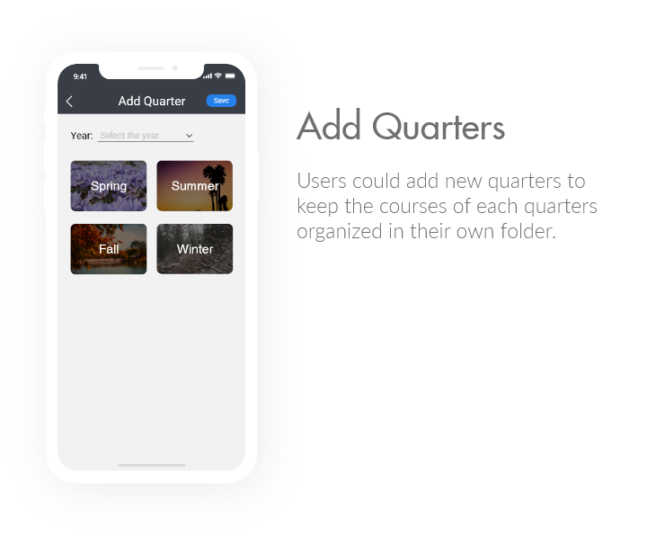

My GPA
"GPA and Course Scores Calculator"

Goal: A GPA and course scores calculator to keep track of each semester results
Date: December 2017
Duration: 1 week
Skills: Case Study, Research, Needfinding, UX Design, Wireframing, Prototyping
Tools: Adobe XD, Adobe Illustrator, Adobe Photoshop
Role: UI/UX Designer (Individual Project)
The Problem
Students often have a hard time keeping track of their scores in multiple classes they're taking during one quarter. These difficulties add up as they're taking more classes each quarter until they graduate. There're no easy way to keep track of grades in each class and the overall GPA achieved by students. The number one obstacle is that each class has different weighing systems and different grade scales depends on the professor. It is very troublesome to keep track of scores in a note, as students will need to keep verifying their current standing with each course’s syllabus and do the calculations manually. In the end, lots of students felt burdened and stop keeping track of their scores.
User Research
In this phase of the process, I identified the goals and the user needs. Based on my observation and interviews with some users, there are a couple of problems that students have encountered while keeping track of their scores throughout the quarter/semester.
- Some teachers choose to use their own website rather than using the website that the school has provided. This caused trouble for the students who are taking several classes because now their scores are scattered on several websites.
- Students need to check the syllabus of each class before they could calculate their standing because of the different coursework weight in each class.
- Students need to calculate their current standing by inputting scores one-by-one into the calculator.
- Students need access to the internet in order to see their past scores.
- Students can't easily keep the records of past school terms.
The Solution
The idea of “MyGPA” mobile application is to make it easier for students to track their grades. This mobile app allows students to add the semester they are enrolled in, along with the courses they are taking that semester. Here are some features that MyGPA has to help students keep track of their scores easily: 
Wireframes
After the needfinding was complete, I created wireframes to construct the general user flow of the app interface. First, I made the wireframes using Adobe Illustrator before I move on to the high-fidelity prototype. The purpose of creating a low-fidelity prototype before moving on to high-fidelity is to focus on the functionality and the structure of the app rather than the looks. Then after it's been taken care of, I move on to the high-fidelity prototype where I could switch my focus to the visual aesthetic of the app.
Heuristic Evaluation
After I finished making the low-fidelity prototype, I conducted a heuristic evaluation of the app. I referred to Neilsen's 10 Heuristics to check if the interface design meets the requirements of the principles. Some heuristics that my wireframes have fulfilled are:
- "Match between system and the real world" - by using language that the users are familiar with, accompanied by icons that are clear and universal.
- "Aesthetic and minimalist design" - only presenting relevant information and keep the design simple.
- "User control and freedom" - providing 'Back' button on each page to give users the freedom to navigate between pages or recover from accidental clicks. Also providing the ability to switch a particular score from "predicted" to "completed" and "grade" to "drop."
Style Guide
Before I started working on the hi-fi prototype, I generated a style guide which consists of font styles, font weights, and color palettes to guarantee the UI styling consistency.

User Flow Diagram
The next step that I take after I finished working on the wireframes is re-checking the user flow map. I took this extra step to make sure that I didn't miss any of the app flows. This user flow diagram was created using Adobe Photoshop.

Mobile App Design Result